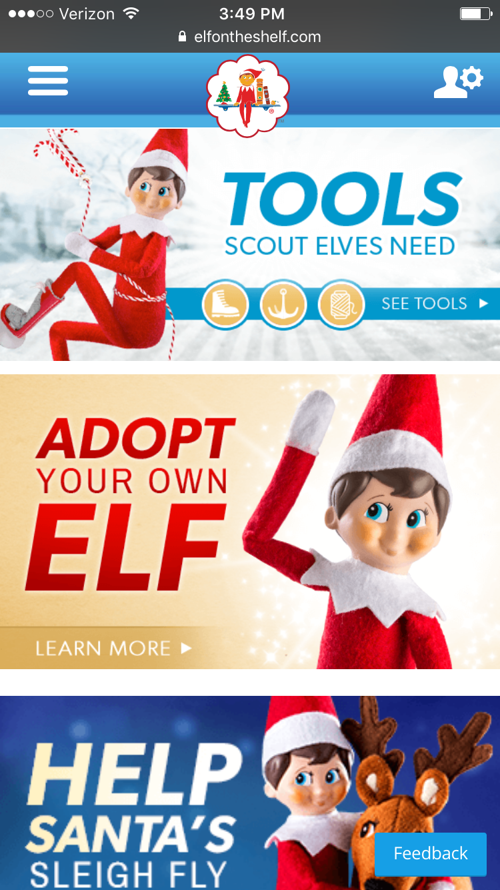
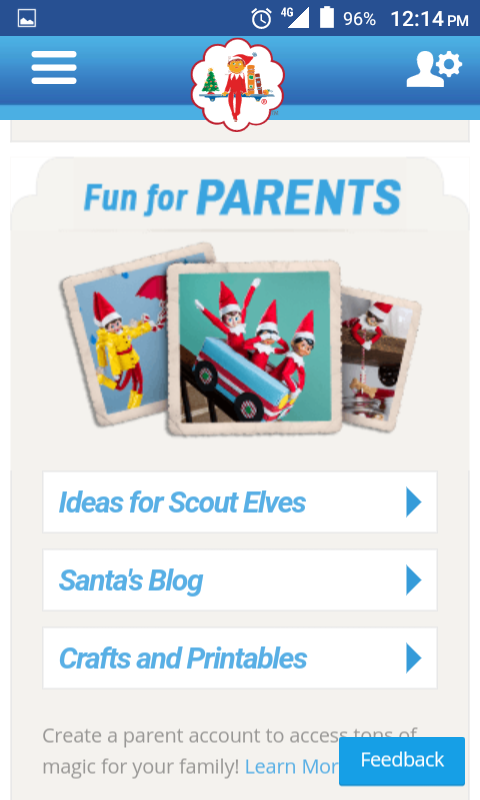

Design - Analysis Assessment
www.elfontheshelf.com
Design Principles
Proximity — Trevor Wayman
Shows all the content intended for kids all next to each other and enclosed by a border thus showing the connection between them.
Alignment — Trevor Wayman
Shows content aligned to the center with grids for easier readability on a mobile device as the sides can sometimes be cropped making any alignment to the sides nonuniform across different phones.
Repetition — Leah DeSpain
The elf on the shelf website employs repetition with a number of elements particularly in regards to that of color and font choice as well as with images. As we can see in the pictures, the colors blue and red are repeated throughout the page giving an all over cohesiveness to the website. The font for the main headings on different elements in the page is all consistent even if size and colors change helping the user more easily identify different pieces of content while still keeping the cohesiveness mentioned earlier. Images that include links to the same content are also repeated making it easier to identify different content links from one another’s without having to actually click on it to investigate first.
Contrast — Kyle Buchanan

In this image contrast is being demonstrated with the different colors of each buton. The color difference makes it easier and more apealing for the kids using this site to chose where they want to go on the site.
Typography — Trevor Wayman
Shows gridded boxes aligned center with its worded content aligned left with content outside of the grid aligned to the center allowing for easier reading on a small screen that’s text allows the readers eyes to flow from larger more prominent colors to smaller less prominent colors.
Site Purpose Statement
Owner: To promote and sell Elf on the Shelf products to kids and parents.
User: To read and play games about Elf on the Shelf and my home decorations.
Target Audience
- Age: 4-10 25-30
- Occupation: Stay at home moms, child care providers,
- Income: $60,000+
- Other: Parents and kids, people who celebrate Christmas
Persona
- Name: Karen Meyers
- Occupation: Karen Meyers is 29 years old and the mom of 5 year old Christine and 7 year old Janessa. Karen has been married to John Meyers for 9 years. Karen and her Husband both work but Karen work but Karen works from part time in order to be with the kids while John works at an accounting firm with normal 8 to 5 work hours. This leaves Karen alone for most of the day to take care of the girls needs and chauffer them around to their many extracurricular activities. Karen enjoys spending time with her girls and planning activities for them. She loves the holidays, particularly Christmas. While neither Karen or John came from families that had many traditions they wish to create new traditions with their girls and desire to have a close knit family above all else. This belief stems from their traditional Christian values.
- Primary Device: Cell Phone
- Quote: Elfontheshelf.com has helped my family create and continue a new family tradition.